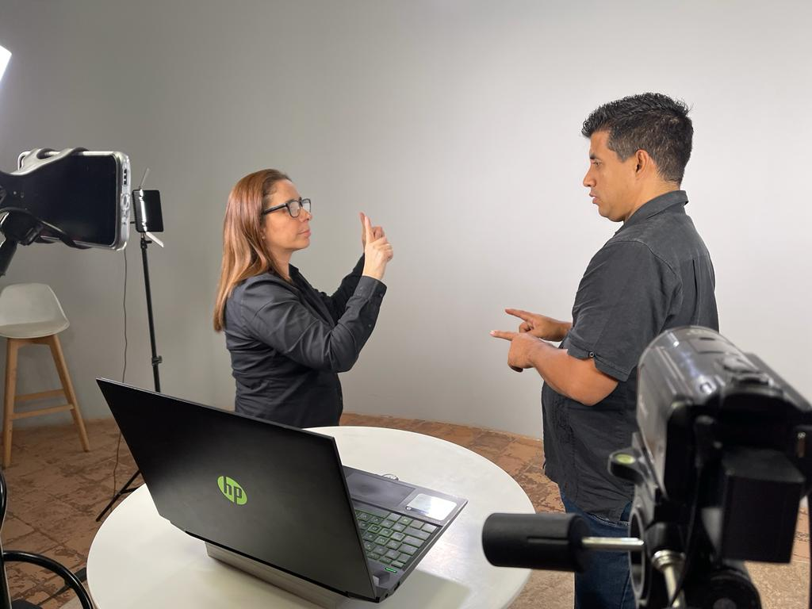
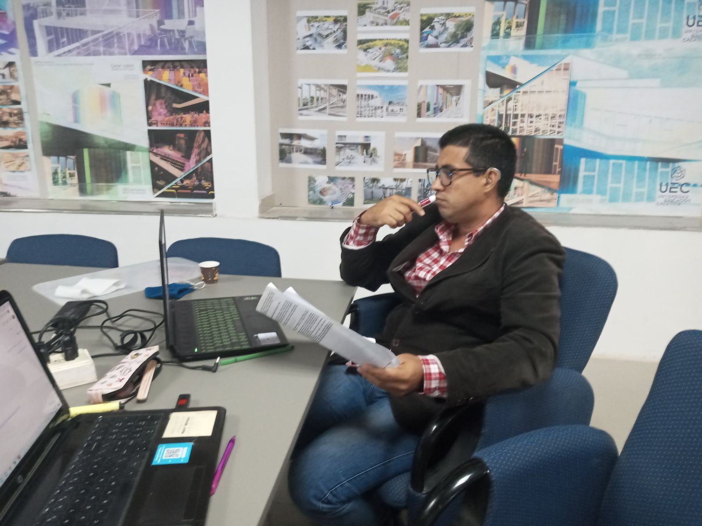
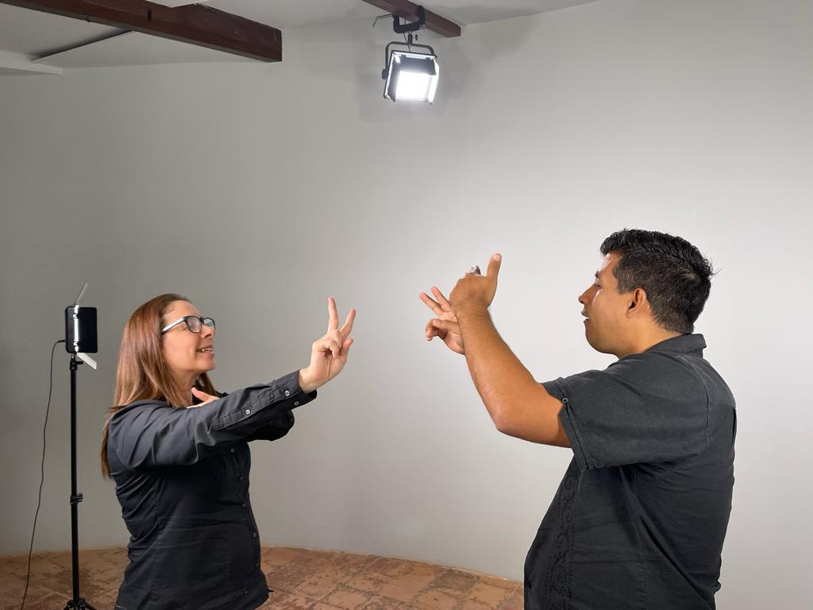
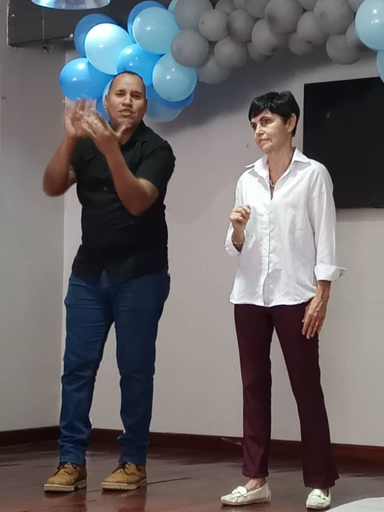
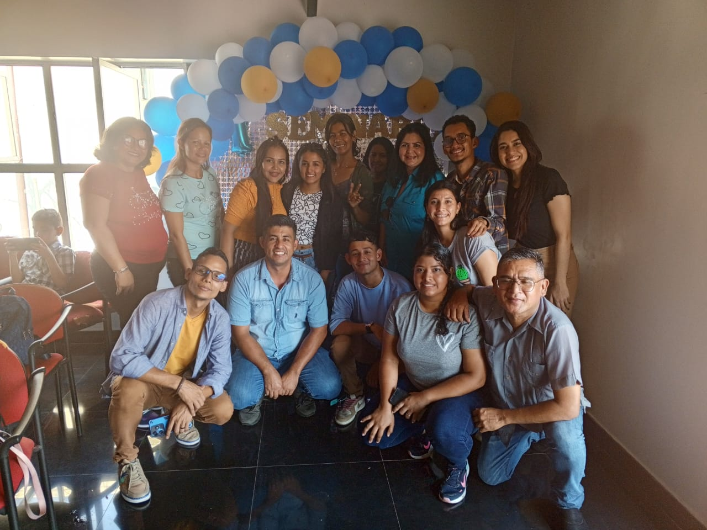
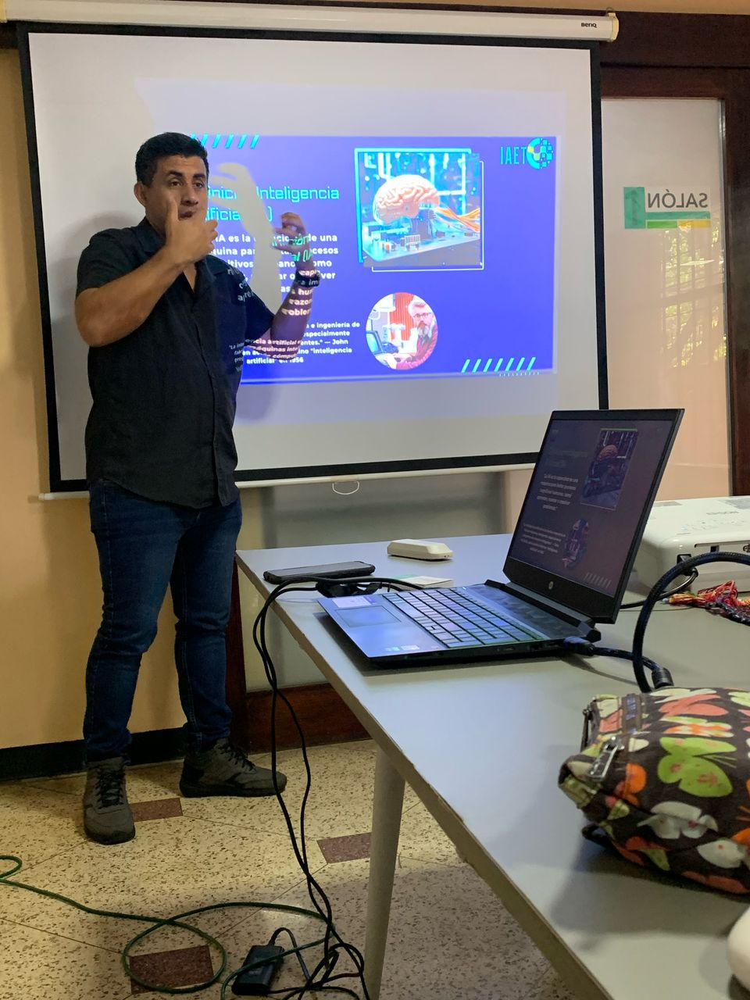
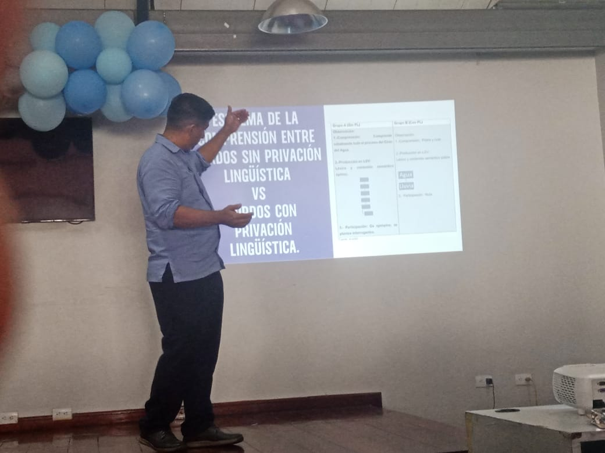
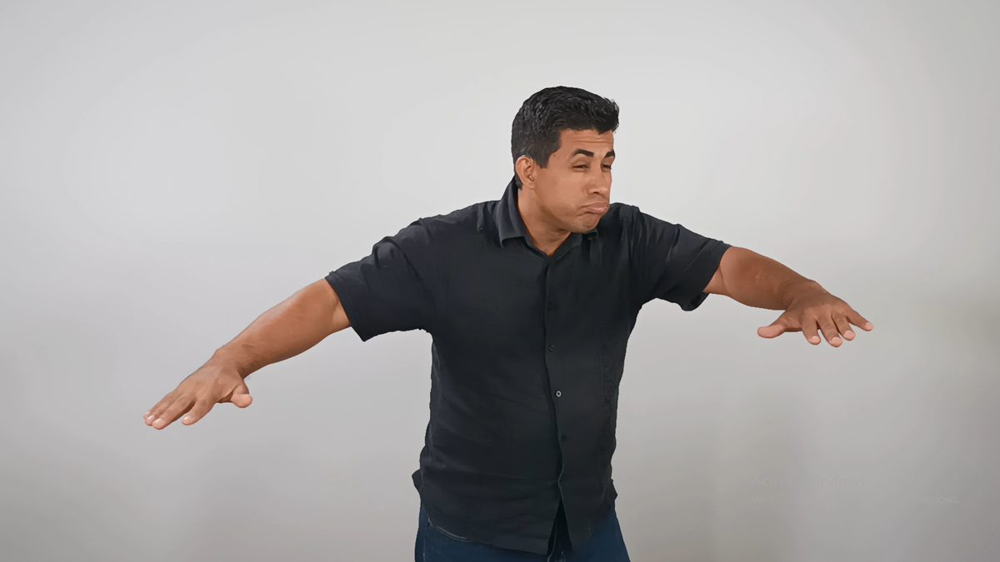
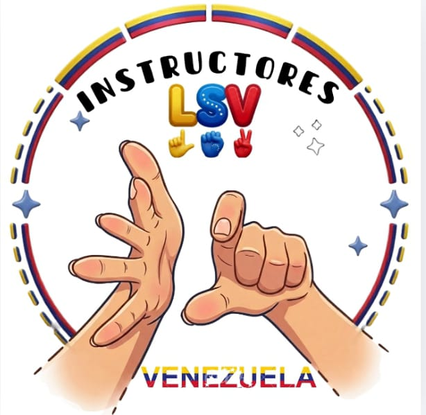

Estás viendo el sitio en modo demostración.
Los datos se guardan solo en este navegador. Para activar la base de datos real,
pega tus credenciales de Supabase en el archivo js/config.js
(las instrucciones están en README.md).
Objetivo de Estudios Sordos de Venezuela
Visibilizar los trabajos realizados por personas sordas a nivel de educación universitaria y determinar la cantidad de egresados en la actualidad.
Cada trabajo de investigación publicado aquí beneficia tanto a la comunidad sorda como a las personas oyentes que necesitan información confiable sobre lengua de señas venezolana, educación de personas sordas, accesibilidad y vida comunitaria. El censo permite que la cifra real de profesionales sordos egresados deje de ser invisible: crece sola cada vez que alguien completa el formulario.
Videos
Cargando videos
Investigaciones destacadas
Trabajos seleccionados por su aporte a la comunidad sorda venezolana.
Cargando investigaciones
Censo de profesionales sordos egresados
Registro abierto y permanente. Los datos personales no se publican: solo se muestran los totales.

Consultando el registro
¿Eres una persona sorda egresada de la universidad?
Regístrate en el censo. Toma menos de cinco minutos y ayuda a que la comunidad conozca cuántos profesionales sordos hay en Venezuela y en qué áreas se desempeñan.
¿Tienes un trabajo de investigación?
Envía tu investigación en PDF para su revisión y publicación. Se aceptan trabajos en educación, lingüística, deporte, área social, cultural, comunitaria, política, arte y biografías de personas sordas destacadas.
Profesionales sordos que autorizaron aparecer aquí
Solo se listan quienes marcaron la casilla de autorización en el censo.
Cargando el listado
La comunidad en imágenes
Defensas, seminarios, grabaciones y encuentros que sostienen este proyecto.






Sobre este sitio
Autoría

Estudios Sordos de Venezuela es una página creada por el Dr. Javier Ramírez González, investigador en educación de personas sordas y en lingüística de la Lengua de Señas Venezolana.
Acceso libre
La web es abierta: todo el contenido es de lectura pública y no requiere registro ni pago para consultar las investigaciones o el diccionario de señas.
Fuente de referencia
Este proyecto toma como referencia el trabajo de difusión de cultura-sorda.org, portal internacional de estudios sordos.
Organizaciones que apoyan este sitio
Colectivos de personas sordas que respaldan y enriquecen este proyecto.
